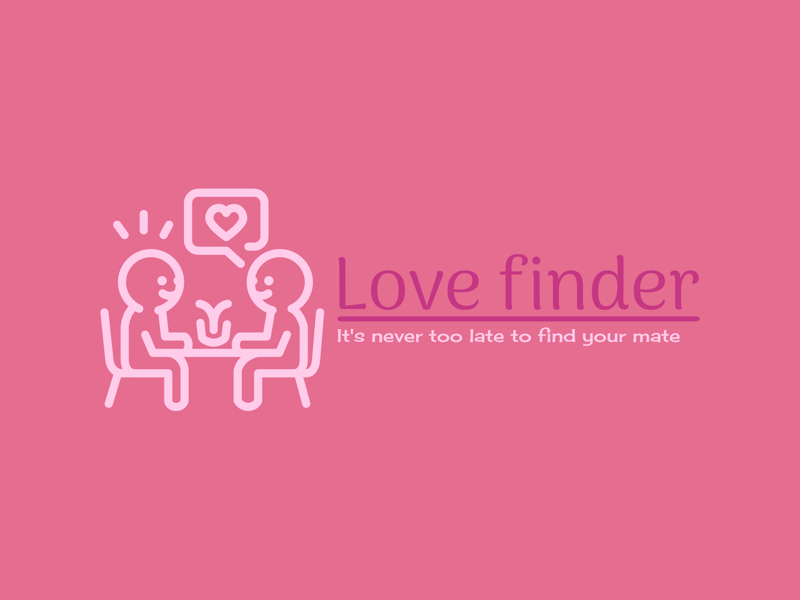

Image Editing Projects
I designed a digital book cover using a photomontage of images and text, and I created a logo representing fictional brand identity.
Cookbook Cover Design

In designing the cookbook cover, I aimed to craft an engaging and visually pleasing aesthetic. I chose a neutral color scheme with subtle contrasts to evoke an inviting atmosphere. The cover features a collage of cooking-related imagery, creating a layered depth that makes the design stand out and appear vibrant and dynamic.
Dating App Logo Creation
The logo for the dating app was envisioned to emit warmth and invitation. With a focus on simplicity and impact, I utilized Photoshop and Canva to manifest my vision. The soft pink color choice reflects love and romance, while the font selection and layout convey connectivity and potential, embodying the spirit of a dating service.